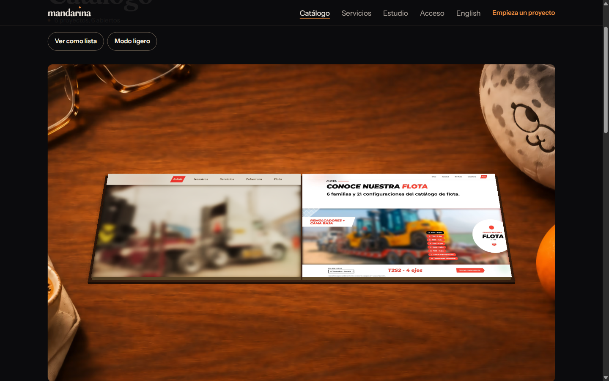
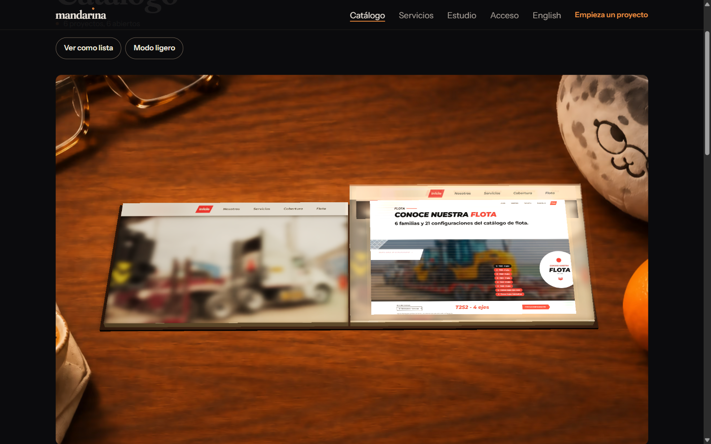

El holograma en el libro, "en el aire"
La variante elegida, ya dentro del libro 3D. En un pliego de proyecto asentado, el puntero sobre la página derecha levanta sus pantallas: el vídeo arriba y, debajo, la primera pantalla del proyecto y dos recortes de ella. Suben una tras otra, se inclinan hacia ti y siguen al puntero hasta 12 px; ya arriba aparecen el borde ámbar y una línea de barrido tenue, y debajo queda el pergamino. El puntero sigue eligiendo el fotograma, y un clic abre el proyecto. Al salir se posan y el vídeo sigue. Solo con ratón o lápiz en el nivel 1; nunca con movimiento reducido, en táctil ni en el nivel 2. Ver las tres variantes o volver.
Sube, el puntero dirige, se posa (Transporte)
Posado y levantado

